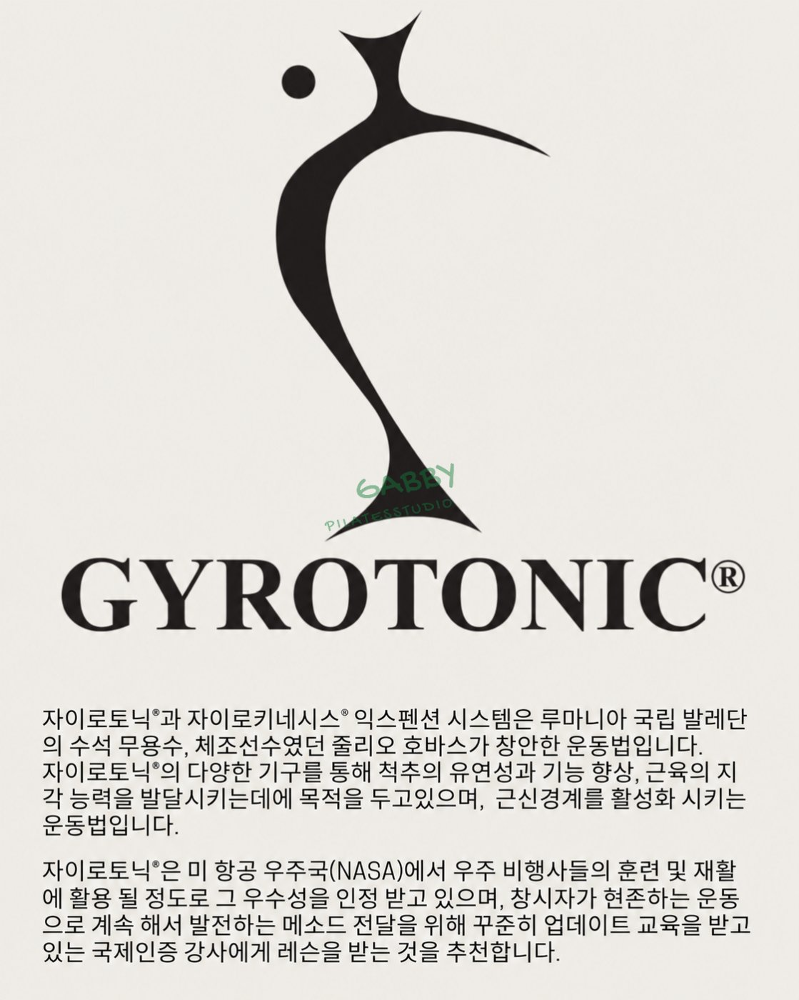

GYROTONIC®
GYROTONIC®
Following the pulleys and rotating wheels of dedicated equipment, the spine moves in spirals to build joint range of motion and strength at the same time. Gentle, yet deeply effective.
- Spinal flexibility · posture
- Rhythmic movement linked to breath
- Minimal stress on joints